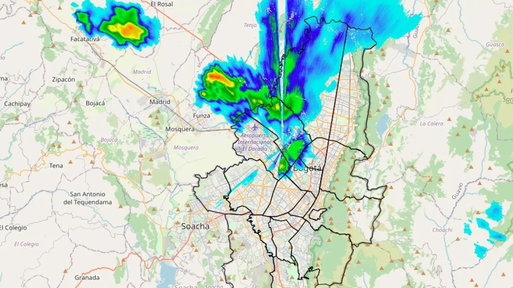
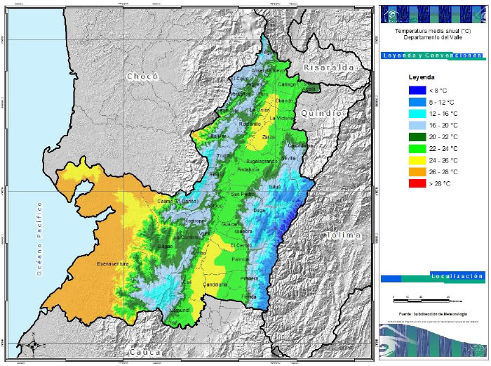
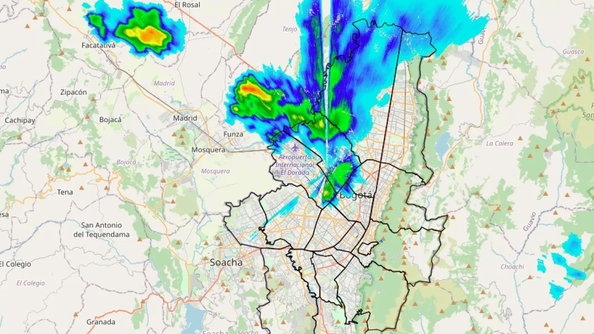
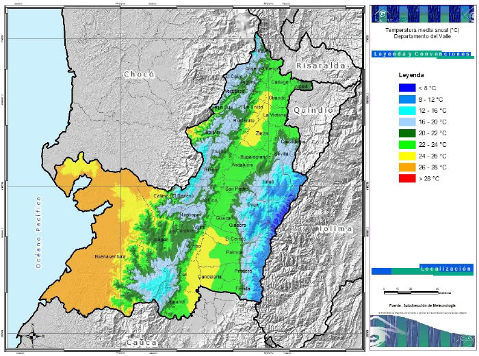

Weather
Select a city to see the simulated weather.
Medellín
Temperature: 27°C
Condition: Sunny with clouds

Bogotá
Temperature: 18°C
Condition: Light rain
Cali
Temperature: 22°C
Condition: Coastal cloudy
Select a city to see the simulated weather.
Temperature: 27°C
Condition: Sunny with clouds
Temperature: 18°C
Condition: Light rain
Temperature: 22°C
Condition: Coastal cloudy
